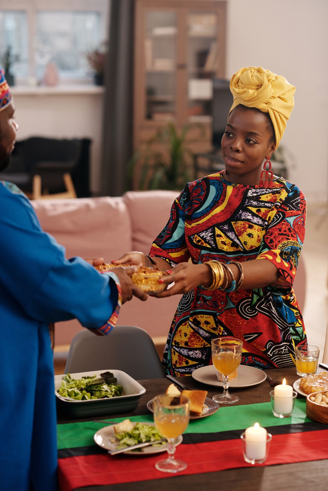

Ancient Roots
Africa is home to some of the world's oldest farmed foods. Sorghum, pearl millet, teff, fonio, African rice, yams and black-eyed peas were all first cultivated on the continent. Coffee comes from the highlands of Ethiopia.
A celebration of the people, places and recipes behind Africa's kitchens.
To celebrate and protect Africa's food heritage by sharing its recipes, stories and traditions, so that every dish is cooked, understood and passed on to the next generation.

Africa is home to some of the world's oldest farmed foods. Sorghum, pearl millet, teff, fonio, African rice, yams and black-eyed peas were all first cultivated on the continent. Coffee comes from the highlands of Ethiopia.
Trade across the Sahara, the Indian Ocean and the Mediterranean brought new spices and ideas. Later, maize, cassava, peanuts, tomatoes and chillies arrived from the Americas. African cooks made them their own, and today they are at the heart of dishes like jollof rice and isombe.
Enslaved Africans carried seeds, skills and recipes across the Atlantic. Their influence lives on in American Southern food, Caribbean cooking and Brazilian cuisine: think gumbo, rice and peas, and acarajé. Today, African restaurants and chefs are winning fans in cities all over the world.
Kimironko Market is one of Kigali's busiest markets. It is a great place to see Rwandan food culture up close, with stalls of fresh produce, cassava leaves for isombe, beans, spices and colourful fabrics.
All photos are free to use. Pexels photos are under the Pexels License; Wikimedia Commons photos are used under the Creative Commons licence shown. Some images have been resized.